Ex Corde Ecclesiae
Magisterio Pontificio
Acceso directo a las encíclicas, exhortaciones y cartas apostólicas de los Sumos Pontífices, enlazadas a los documentos oficiales de la Santa Sede.
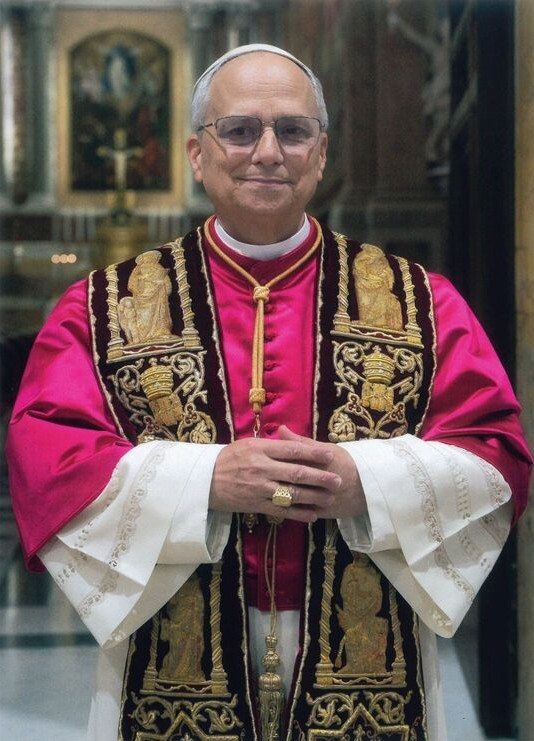
Pontificado: 2025 - Actualidad
León XIV
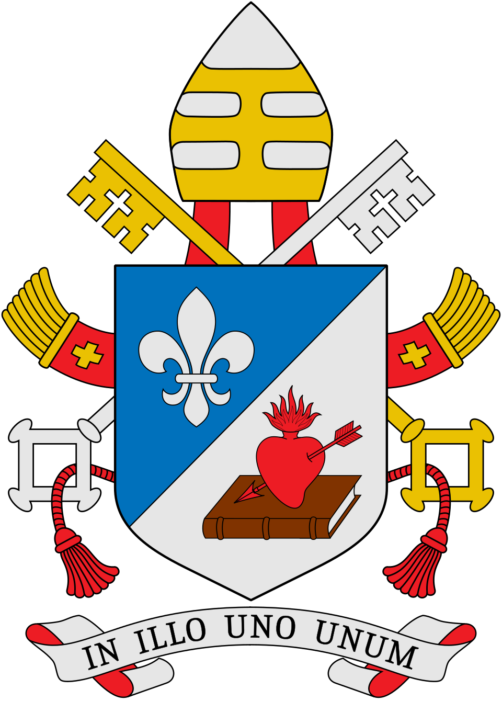
▼


Pontificado: 2013 - 2025
Francisco
▼
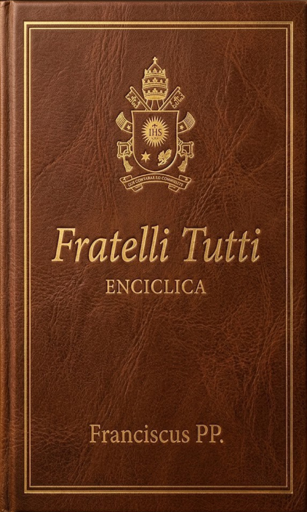
Fratelli Tutti
Carta Encíclica (2020)
➔
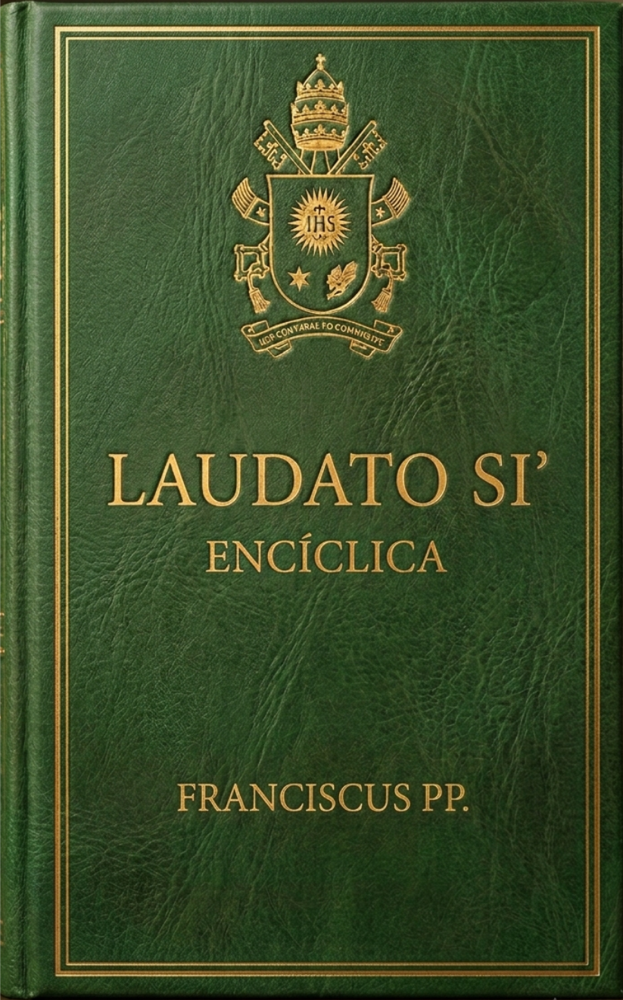
Laudato si'
Carta Encíclica (2015)
➔
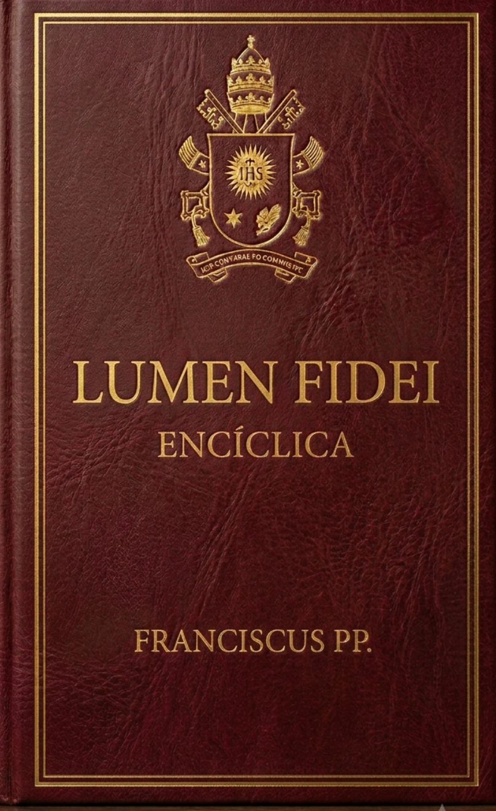
Lumen Fidei
Carta Encíclica (2013)
➔
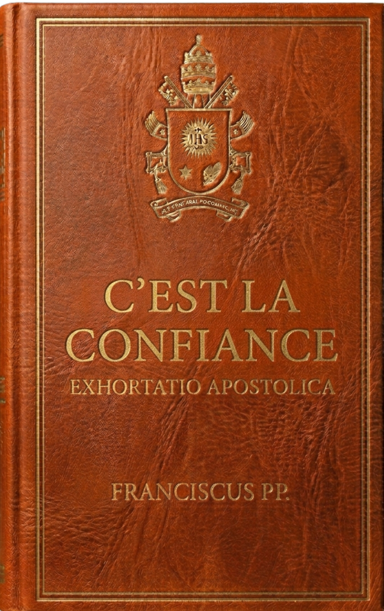
C'est la confiance
Exhortación Apostólica (2023)
➔
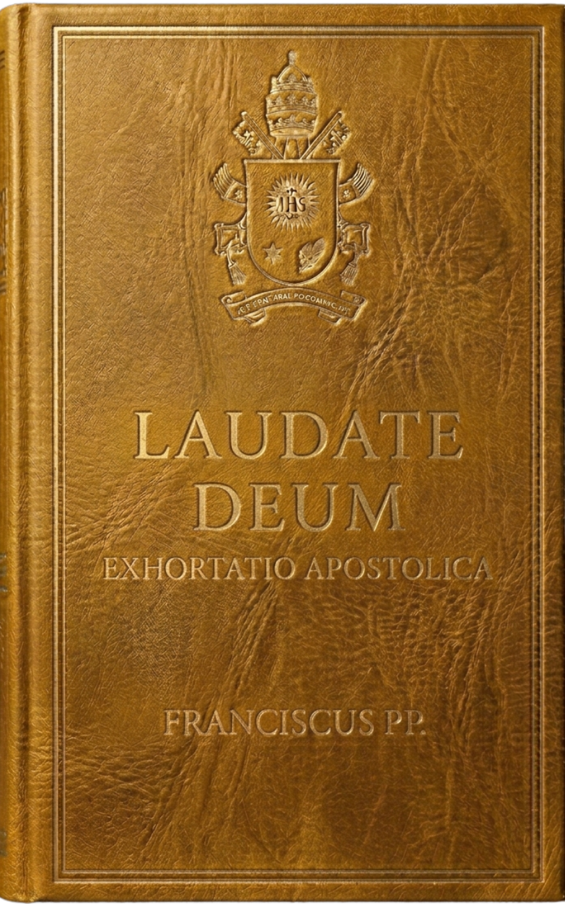
Laudate Deum
Exhortación Apostólica (2023)
➔
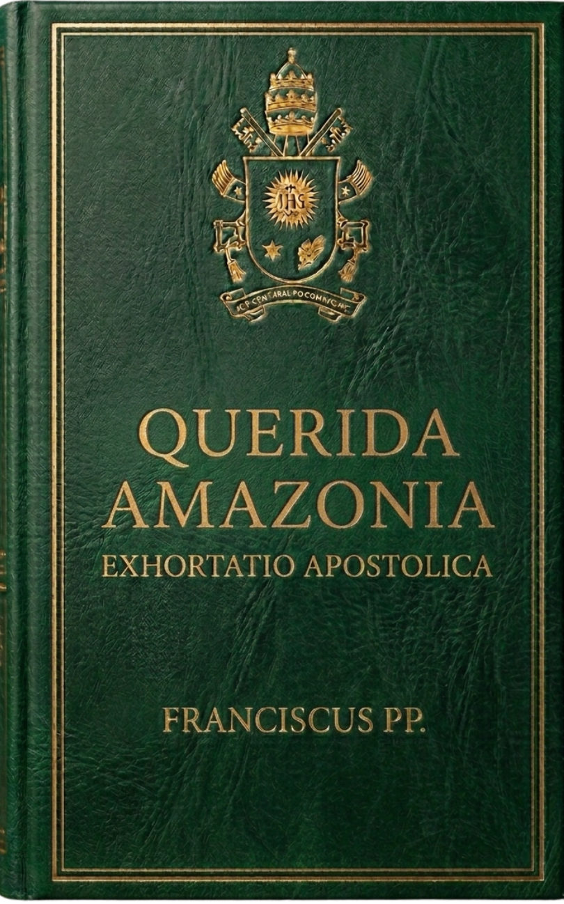
Querida Amazonia
Exhortación Apostólica (2020)
➔
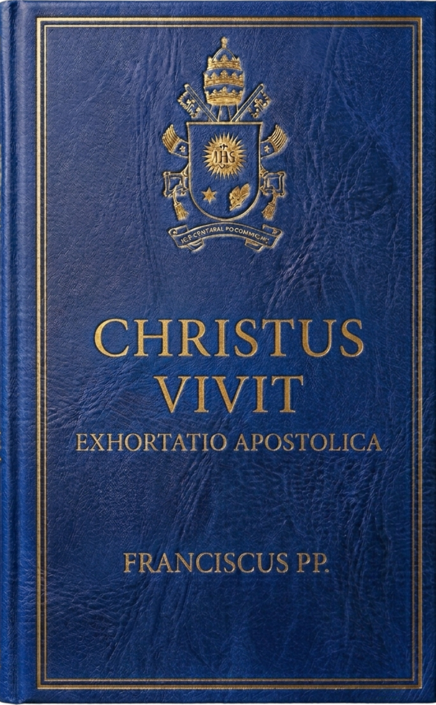
Christus Vivit
Exhortación Apostólica (2019)
➔
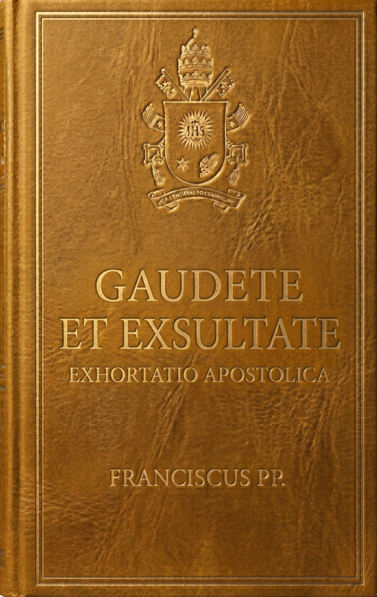
Gaudete et Exsultate
Exhortación Apostólica (2018)
➔
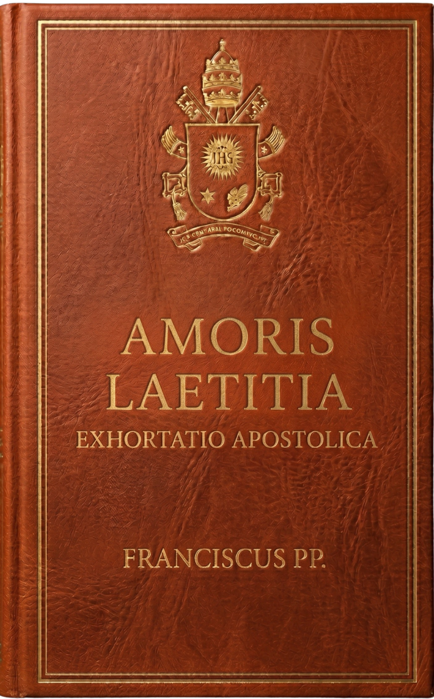
Amoris Laetitia
Exhortación Apostólica (2016)
➔
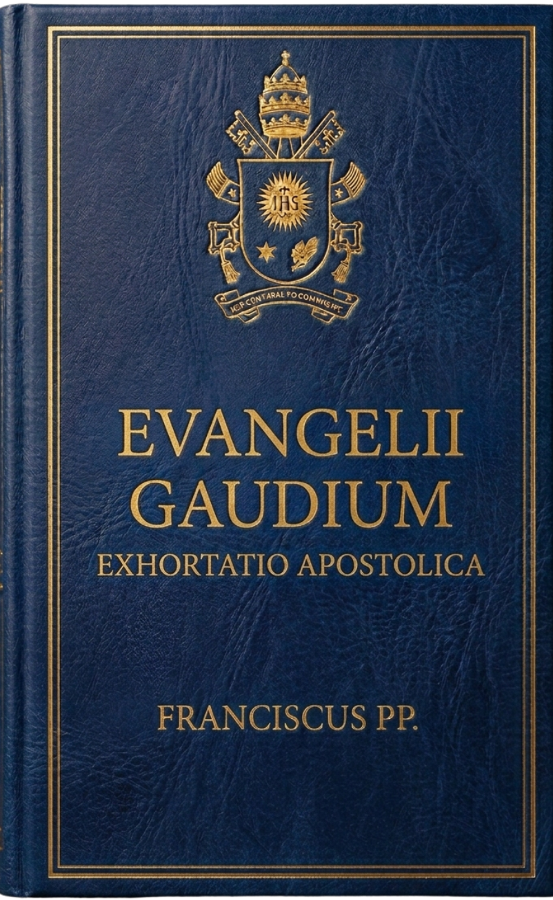
Evangelii Gaudium
Exhortación Apostólica (2013)
➔
Próximos Pontífices
Indexando encíclicas, cartas apostólicas y bulas de pontificados anteriores.